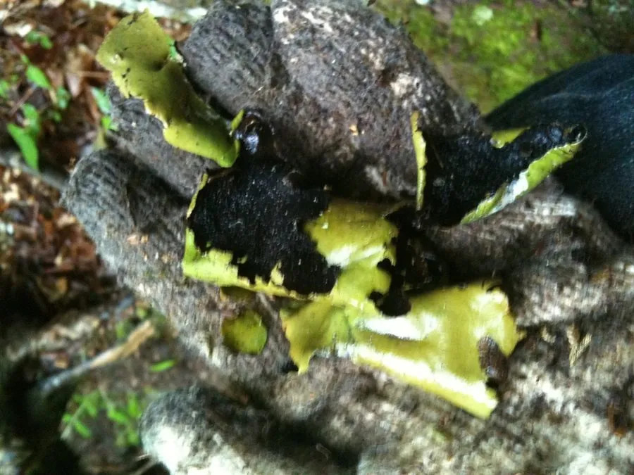

真菌 · 真菌界
石耳 Umbilicaria esculenta

石耳是紧贴岩石生长的脐状地衣，形如黑色的耳朵，中央有脐固着岩面，是黄山等地的名贵山珍，可食也可入药。
- 分类
- 门子囊菌门纲茶渍纲目石耳目科石耳科属石耳属
- 栖息环境
- 山地岩石阴面，尤其花岗岩峭壁，靠雨水和空气养分生长
- 地理分布
- 中国华东、华中与西南山地，以黄山、庐山等地著名
- 保护级别
- 暂无评估（IUCN 未评估，野生资源因采挖减少）
物种志
石耳是地衣，由子囊菌与绿藻共生形成。地衣体呈叶状或脐状，直径 2–10 cm，边缘波状或浅裂，整体形似一只黑色的耳朵；表面灰褐色至黑褐色，干燥时脆硬，湿润时变为革质、略有弹性；背面黑色，密生细小的疣状突起，中央有一个脐状固着器，把地衣体牢牢固定在岩石上，因此得名“石耳”。
石耳生于山地岩石的阴面，尤其是花岗岩峭壁上，在黄山、庐山、武陵山等山区有名，中国华东、华中和西南山地有分布。它靠吸收雨水和空气中的养分生活，生长极其缓慢，从指甲大小长到可采需要许多年。石耳是传统的山珍，与鸡肉同炖是安徽、江西等地的名菜，口感软糯；中医认为它有清热止血、明目之效。由于野生石耳生长慢、采挖危险，市场上已有栽培和替代品，采食时应选择正规来源。
形态与习性
- 分类地衣，由子囊菌与绿藻共生
- 地衣体脐状或叶状，直径 2–10 cm
- 颜色表面灰褐至黑褐色，背面黑色
- 固着中央有脐状固着器紧贴岩石
- 生长极其缓慢，多年才可采收
- 食用性可食，是传统山珍
- 药用传统认为可清热止血、明目
趣味知识
- 石耳中央有一个脐状固着器，把它牢牢“钉”在岩壁上。
- 它形如黑色的耳朵，所以叫“石耳”或“岩耳”。
- 石耳生长极慢，长到能采要很多年。
- 安徽、江西一带用石耳炖鸡，是当地的传统名菜。